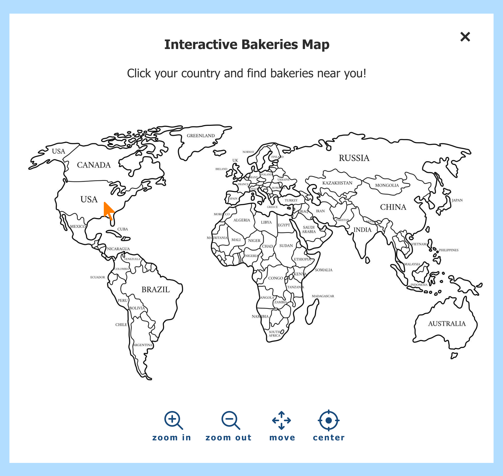
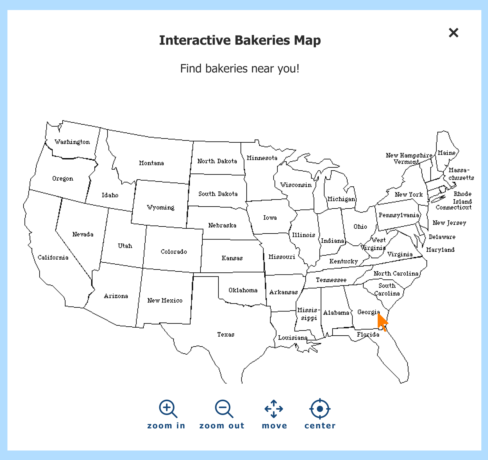
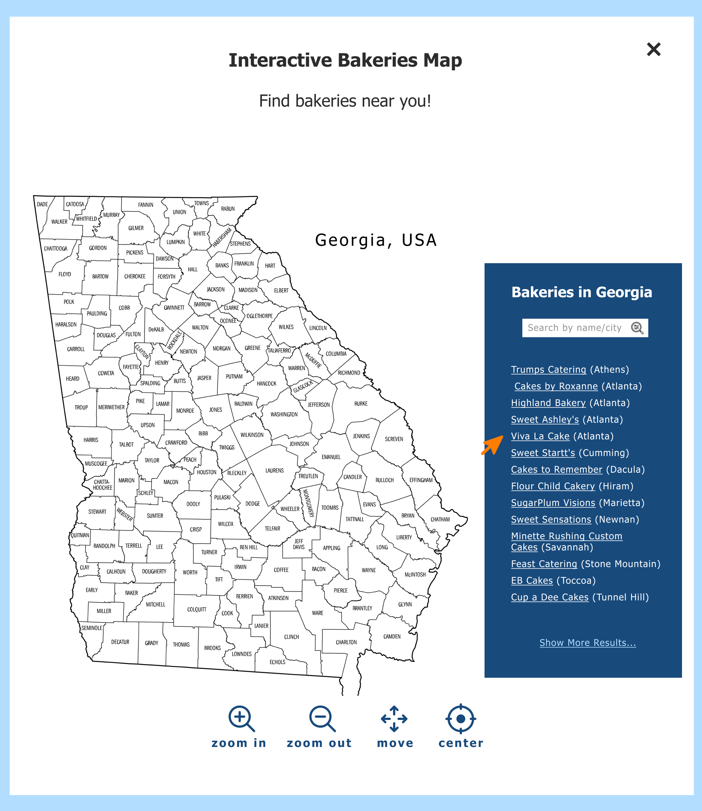

Case Study
Cake Wrecks
Cake Wrecks is a blog website about humorous cake-related content. Its purpose is to entertain users via posting unintentionally amusing cakes and comedic commentary, and to create a community of cake-fail fans.
role
- UX Research
- UI Design
- Rebranding
team
- Tahaylia Higgins
- Timothy Mahr
- Cody Vo
clients
- Cake Wrecks
- (potential)
duration
- Fall 2023
- (7 weeks)
Overview
The goal of this case study is to identify usability challenges surrounding the ease of user navigation on large and small screen sizes, web layout satisfaction, content accessibility, and preferences to improve user experience and enhance user satisfaction.

Cake Wrecks Original Design
Problem
Cake Wrecks currently presents numerous usability challenges within its navigation and design system which undermine the users' trust and confidence in intuitively exploring the website.
To improve user experience, the website requires an optimized navigation system, including a search bar with an advanced search filter, updated sharing options, a clear and concise contact page, an effective archive, and a design revamp.
User Research: Questionnaire
Pre-Test Questionnaire
- Qualitative Data: Open-ended questions
- Quantitative Data: Likert scale, Close-ended questions
Post-Test Questionnaire
- Qualitative Data: Open-ended questions, Likes, Dislikes, and Recommendations
User Research: Observation Test
Qualitative Data:Think-Aloud Protocol Analysis, Paths
Quantitative Data:Successful Task Completion, Time On Task, Errors
Scenario 1: The Archive
- Familiarity with finding past content on websites
- Competence in sharing content from the website with others
Scenario 2: Cake Inspiration
- Ability to find content relevant to a theme
- Proficiency in navigating through various sections of the website
Scenario 3: The Cake Wrecks Crew
- Familiarity with accessing information about the website
- Ability to contact the owner of the website
Heuristic Evaluation
User Personas

Solution: Color & Typography
Preserved the brand's playful theme and vibrant colors, by keeping its color scheme of dark and light blue, white and orange.
Used a lighter shade of black for texts, and kept the font-family Tahoma.
Added a lighter shade of orange to display the active state of the menu tab, and hovered menu tabs.
Solution: Navbar
Expanded navbar to utilize the screen's real estate; and removed babies on carrots because participants found them inappropriate. There was a clear need to implement a new menu tab for easy access to all blog posts, as well as a dropdown menu based on the theme of the cake.
The menu items were renamed from Home, Contact, About, and Sunday Sweets Directory to intuitve labels Home, About, Cake Blog, Bakeries, Contact.
Menu items were repositioned to the right and the logo to the left to display a more visually pleasing and balanced layout.
Solution: Archive
User frustration: This is showing me dates
Old design: Limited to sorting content via the archive which is labeled by Month, Day, and Year.
New design: efficient way of sorting the pages which is why implementing an archive with filtering options, “Sort by Date”, “Sort by Popularity”, and “Sort by Category” is necessary.
If users select, “Sort by Category”, a dropdown menu appears to let them select their specific categories; as well as an ‘ Apply’ button for confirmation.
Solution: Homepage

User frustration: The layout looks outdated
Results from the heuristic evaluations and the observation tests mentioned that the layout looked outdated and the clutter made it difficult to navigate. 3D effects were added throughout the website for a more engaging UI experience, and the clutter was removed.
Added an “Explore Wrecks” button to lead users directly to the Cake Blog’s webpage.
Removed the tagline from the logo and transformed it into a running banner for interactivity.
Solution: About Page
User frustration: Why is it not telling me about the website?
Users reported that the ‘About’ page contained insufficient information about the website, I relocated the ‘What’s a Wreck?’ sidebar content to the ‘About’ section.
Presented team’s information in a 4-column grid to make page more user-friendly.
A ‘back to top’ button that comes into effect after the user has scrolled a certain amount of pixels away from the top of the page.
Solution: Cake Blog Page
User frustration: Not easy navigating to the next post
User frustration: I see a share button here; I don’t know which post it’s specific to.
Used breadcrumbs navigation so that users can identify where they are currently within the website’s hierarchy.
‘Next’ hyperlink is renamed to ‘Next Post’ with the title of the post underneath for more clarity; and repositioned from directly above the footer to the end of each post for easy navigation.
Rearranged the structure of the post so that the share option followed immediately after to eliminate confusion amongst participants.
Limited the webpage view to one post at a time since it previously showed two posts. Also reorganized and redesigned the comment section and related posts.
Solution: Bakeries Blog Page

User frustration: “I’m guessing these are professional bakers that I could ask to make it
Added a new heading, ‘Bakeries’ to remind users of their current page and kept the paragraph so that users have an understanding of why these bakeries are listed.
Reduced the initial overwhelm, and ‘guessing game’ by removing the list of bakeries and adding an ‘Explore Bakeries’ button that leads to an interactive map when clicked.
User Flow: Bakeries Page
1
Designed interactive map based on participants’ preference for visual content.
2
Added an 'X' in the upper-right corner to close popup map. Also, added navigation icons.
3
When the user clicks a country, the country’s map appears. When the user clicks a country, e.g. the USA, it zooms to where users can see the states.
4
A panel opens up to the right. It includes the cities and a hypertext list of the bakery names and their cities, and a search filter for quick navigation.
Solution: Contact Page
User frustration: It’s telling me to contact her, but it’s not giving me the option to
The website provides 3 options for contact. These were redesigned into 3 columns for a better user experience.
Hypertext was colored blue to show users this link could be clicked.
Final Design